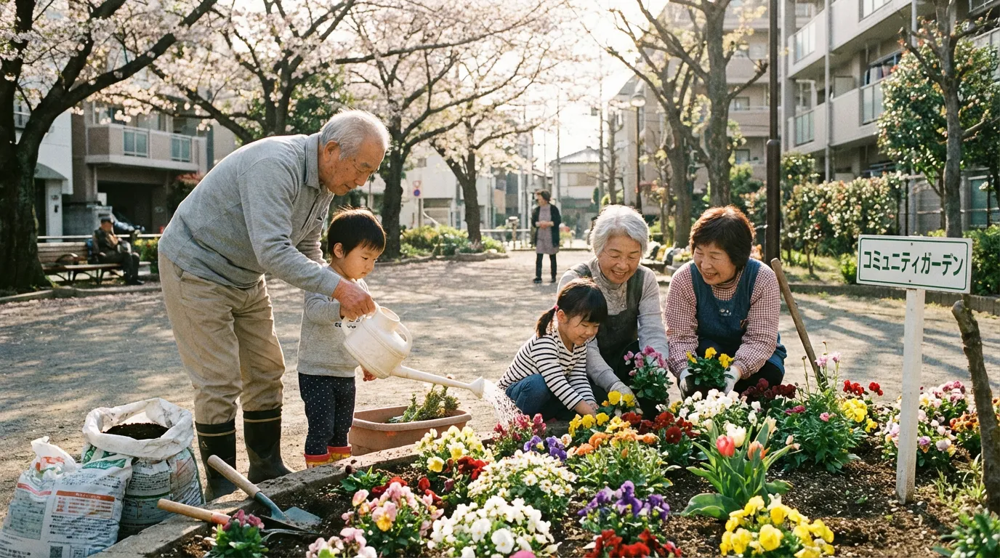

子どもの頃、放課後に友達と集まった公園のブランコ。休日に家族で訪れた滑り台。しかしいま、あなたの街の公園から、そうした遊具が静かに姿を消しています。代わりに増えているのは、ストレッチや筋トレができる「健康遊具」。
筆者には2歳の子どもがいますが、近所の公園にあるジャングルジムと砂場が撤去されることになりました。代わりに複数の健康遊具が設置される予定です。「おおきくなったら、あかいろ（ジャングルジムの一番上）までのぼりたい！」という子どもの夢は壊されることになったのです。
なぜ子ども向けの遊具は撤去されるのでしょうか。
結論から言えば、公園遊具の撤去には3つの主要因があります。
- 2002年の安全基準改正（箱ブランコ事故後の規制強化）
- 財政難と老朽化（更新できない自治体の現実）
- 少子高齢化（利用者が「子ども」から「高齢者」へシフト）
そこには少子高齢化、予算削減、そして安全基準の変化という、日本社会の構造的な転換が映し出されています。
単なる遊具の入れ替えではありません。私たちの社会が直面している課題が、公園という身近な空間に凝縮されているのです。
本記事では、統計データと現場の声をもとに、公園遊具撤去の「本当の理由」を探ります。そして、すべての世代が共生できる未来の公園のあり方を考えていきます。
公園の遊具撤去はいつから？データで見る20年の変化

公園から遊具が消え始めたのは2000年代初頭からです。過去20年間で子ども向け遊具は急速に減少し、代わりに高齢者向けの健康遊具が7倍に増えました。国土交通省の統計データをもとに、遊具の種類別減少率、地域別の撤去状況、公園利用者層の変化を詳しく見ていきましょう。
激減する「昔ながらの遊具」―87%消えた箱ブランコ
公園遊具の減少は、統計データで見ると驚くべき速度で進んでいます。国土交通省の調査によれば、1998年から2013年のわずか15年間で、特定の遊具は劇的に減少しました。
ゆりかご型ブランコは14,198基から1,864基へと87%も減少。回転塔は5,526基から2,902基へとほぼ半減しています。これらの遊具は、多くの人が子ども時代に親しんだものですが、いまでは「絶滅危惧種」と呼ばれるほど珍しい存在になりました。
さらに深刻なのは、東京都23区における状況です。東京新聞の調査によると、2015年から2022年の7年間で、400カ所以上の公園で遊具が撤去されました。これは単に老朽化による更新ではありません。遊具そのものが減少しているという事実です。遊具が完全に撤去され、ベンチだけになった公園も珍しくありません。
ワンポイント
現在、公園に最も多く設置されている遊具は、踏み板式ブランコ（69,910基）、すべり台（66,704基）、砂場（62,275基）の順。しかし、これらも更新時期を迎えると撤去される可能性が高く、全体としての遊具数は確実に減少傾向にあります。
一方で急増する「健康遊具」―背景にある利用者層の変化
遊具が減少する一方で、健康器具（健康遊具）は過去20年間で7倍に増えました。ストレッチポールやツボ押しベンチ、懸垂バーなど、主に大人や高齢者の健康増進を目的とした器具が、公園の主役となってきています。
この変化の背景には、公園利用者層の変化があります。令和3年度の都市公園利用実態調査によれば、高齢者の公園利用率は2001年の11.3%から2014年には13.6%へと増加しました。一見わずかな増加に見えますが、高齢者の絶対数が大幅に増えていることを考えると、実質的な利用者数は大きく増えています。
対照的に、子どもの外遊び時間は劇的に減少しています。1981年には2時間11分だった外遊び時間は、2016年には1時間12分へと30%以上減少しました。家でゲームをすることが多くなった子どもの姿が公園に少なくなり、代わりに健康づくりに励む高齢者の姿が目立つようになったのは、こうした社会全体の変化を反映しています。
さらに、児童遊園は40年前の半数以下にまで減りました。少子化による利用児童の減少、時代の変化に伴う遊び方の変容に加え、遊具の老朽化等が進んだ結果、多くの自治体が児童遊園の廃止や統廃合を進めています。
あなたの街でも起きている―地域別の撤去状況
この変化は全国的に広がっています。横浜市では745基のスプリング遊具（バネで揺れる乗り物型遊具）を撤去。名古屋市、札幌市、岐阜市などでも同様の撤去が多発。特定の危険な遊具だけでなく、素人目には比較的安全と思われる遊具にまで及んでいます。
地方自治体の公園維持管理費は平均6.9億円/都市、1㎡あたり202円というデータがあります。限られた予算の中で、老朽化した遊具の更新、日常的な清掃や点検、樹木の剪定など、多様な管理業務をこなさなければなりません。人口減少と税収悪化に直面する自治体にとって、公園管理は大きな財政負担となっているのです。
「近所の公園が様変わりした」という実感は、多くの人が持っているものです。子どもの頃に遊んだ公園を久しぶりに訪れると、遊具がすっかり少なくなり、代わりに健康器具が並んでいる。そこには、日本社会の静かな、しかし確実な変化があります。
公園の遊具が撤去される3つの理由

公園遊具の撤去には、複雑に絡み合った3つの主要因があります。2002年の安全基準改正、自治体の財政難と遊具の老朽化、そして少子高齢化による利用者層の変化。これらの要因が重なり合い、全国的な遊具撤去を促進しています。
理由①：2002年の安全基準改正―「箱ブランコ事故」が変えた日本の公園
公園遊具の大量撤去を引き起こした最大の契機は、2002年の安全基準改正です。その背景には痛ましい事故がありました。
2000年代初頭、神奈川県藤沢市をはじめ全国各地で、箱ブランコによる死亡事故が相次ぎました。箱ブランコは、複数の子どもが一緒に乗って大きく揺らすことができる人気の遊具でした。しかし、その重量と勢いゆえに、誤って落ちてしまったり、ゴンドラにぶつかる、ゴンドラの下に巻き込まれるなどの重大事故が多発し、社会問題化しました。
こうした事故を受けて、2002年に遊具メーカーなどでつくる「日本公園施設業協会」が、国土交通省の指針に沿って「遊具の安全に関する規準（JPFAスタンダード）」を策定。この規準では、各遊具の周辺に「安全領域」を確保することが義務づけられました。
安全領域とは、遊具から転落したり衝突したりする可能性を考慮し、遊具の周囲に一定の空間を確保しなければならないというもの。すべり台、ブランコ、回転ジャングルジム、ロープウェイなど、利用者の大きな動きを伴う遊具については、動きの方向なども考慮した広い安全領域が求められます。
ワンポイント
この基準の導入により、狭小な都市公園では物理的に複数の遊具を設置することが困難に。特に都心部の公園は面積が限られているため、安全領域を確保すると、従来のように3〜4種類の遊具を設置することができなくなりました。
さらに、国土交通省の「都市公園における遊具の安全確保に関する指針」では、重量が大きい可動性の箱型ブランコや遊動木などの遊具は、接触した場合の衝撃が大きく、重大な事故につながるおそれがあるため、選定に当たって慎重な検討が求められています。回転ジャングルジムや遊動円木も「好ましくない遊具」として指定され、全国で急速に撤去が進みました。
東京23区の多くの自治体は、遊具減少の理由について「更新の際、『遊具の安全に関する規準』で定められた安全領域を確保できないため」と回答しています。安全を守るための基準が、結果的に遊具そのものの減少を招くという皮肉な状況が生まれているのです。
理由②：老朽化と財政難―更新できない自治体の現実
日本の公園の多くは、高度経済成長期からバブル期にかけて整備されました。それから数十年が経過し、いま遊具の老朽化が深刻な問題となっています。
国土交通省の調査によれば、設置から20年以上経過した遊具が約5割を占め、経過年数不明の古いものと合わせると遊具の約6割が相当の年数を経過しています。金属部分の腐食、木材の腐朽、プラスチック部品の劣化など、長年の使用と風雨にさらされた遊具は、安全性の観点から更新が必要な状態です。
しかし、自治体の財政状況は厳しさを増しています。人口減少と地域経済の縮小により税収が悪化。公園管理に十分な予算を割くことが困難になっているのです。遊具の定期点検、損傷部分の修繕、万が一の事故に備えた保険費用など、遊具を維持するコストは決して小さくありません。
老朽化した遊具を更新する際、自治体は厳しい選択を迫られます。安全基準を満たす新しい子ども用遊具を設置するには、相応の費用がかかります。一方、健康遊具は比較的安価で、かつ高齢者という増加する利用者層のニーズに応えることができます。財政制約の中で、多くの自治体が後者を選択する傾向にあるのは、ある意味で合理的な判断とも言えるでしょう。
ワンポイント
公園は遊園地のような常時監視ができません。遊具の故障などを早期に発見することが難しく、重大事故が起きてから問題が発覚することも多いです。事故が起きれば自治体の責任が問われるため、「危険の予兆がある遊具はいっそのこと撤去する」という判断に至るケースが増えています。
こうして、財政難と安全配慮の板挟みの中で、遊具は更新されることなく撤去され、公園から子どもの遊び場が失われていく。そんな現実が生まれています。
理由③：少子高齢化―利用者が「子ども」から「高齢者」へ
遊具撤去の根本的な要因は、日本社会の人口構造の大転換にあります。
2018年10月時点で、総人口に占める65歳以上人口の割合（高齢化率）は28.1%に達しました。政府の推計によれば、2065年には高齢化率が38.4%に達し、国民の約2.6人に1人が65歳以上になると予測されています。
特に重要なのは「2025年問題」です。団塊の世代が75歳以上となる2025年には、日本はおよそ5.5人に1人が75歳以上高齢者という、人類史上例を見ない超高齢社会を迎えます。認知症の高齢者の割合や、世帯主が高齢者の単独世帯・夫婦のみの世帯の割合も増加していきます。
この人口動態の変化は、国の政策にも明確に反映されています。厚生労働省の「健康日本21（第二次）」では、「住民が運動しやすいまちづくり・環境整備に取り組む自治体数の増加」が目標として掲げられ、都市公園が健康増進の場として重要な位置づけを与えられました。
さらに、令和元年の「認知症施策推進大綱」では、公園等の地域において住民主体で行う「通いの場」の拡充や、都市公園での自主的・継続的な運動プログラム等の取組の支援が例として記載されています。国の政策として、公園を高齢者の健康づくりの拠点として活用する方向性が明確に示されているのです。
対照的に、子どもの数は減少の一途をたどっています。少子化により、公園で遊ぶ子どもの絶対数が減少。「子どもの遊び場」としての公園の重要性は相対的に低下しています。政策判断として、子どもの数よりも高齢者の数が多いという現実を前に、限られた公園予算をどこに配分すべきかという問いに、多くの自治体が「高齢者の健康増進」という答えを選択しているのです。
こうして、公園は「子どもの遊び場」から「高齢者の健康増進の場」へと、その主要機能を静かに転換しつつあります。これは単なる遊具の入れ替えではなく、日本社会の価値観と優先順位の変化を象徴する出来事なのです。
「子どもの声がうるさい」――公園で起きている世代間対立

公園再編の過程で、世代間の対立が表面化するケースが増えています。「子どもの声がうるさい」という苦情による公園廃止、遊具設置への反対運動、一方で子育て世代からの「遊び場を奪わないで」という悲痛な声。この章では、実際に起きている対立の現場と、その背景にある社会構造の問題を掘り下げます。
実例：苦情で廃止された長野市の公園
公園再編の過程で、世代間の対立が表面化するケースが増えています。その象徴的な事例が、長野市で起きた公園廃止問題です。
2004年に開設されたこの公園では、開設直後から近隣の1世帯から「うるさい」という苦情がありました。自治体は対応策として、数年後に公園の出入り口の位置や遊具の場所を移設する工事を実施。しかし、苦情は止まず、最終的に2023年に公園の廃止が決定されました。
この決定には「住民不在で進んだ議論」という批判が寄せられました。公園を利用していた子育て世代や子どもたちの声は十分に反映されず、一部の苦情に押される形で廃止が決まったという経緯に、多くの人が疑問を呈したのです。
公園は本来、地域住民全体の共有財産であるはずです。しかし、声の大きさや政治的影響力の違いにより、特定の世代の意見だけが通ってしまう。そんな構造的な問題が、この事例からは浮かび上がってきます。
都市部で増える「静かな公園」への要求
世代間対立は、遊具の撤去をめぐっても現れています。ある公園では、住宅から離れた場所の草地に滑り台を一基設置する計画に対して、3名の高齢者が「踏圧で木の根がいたむ。草地面積が減って自然破壊だ」と反対の陳情を出したのです。
こうした事例は全国で報告されており、遊具設置そのものに対する反対意見が、公園計画の障壁となっています。高齢者にとっては、静かで落ち着いた緑の空間としての公園が理想。子どもたちが走り回る賑やかな空間は必ずしも望ましくないという価値観があります。
さらに深刻なのは、公園での子どもの行動そのものが制限される傾向です。全国の自治体の6割が都市公園でのボール遊びを禁止しているという調査結果があり、「公園も大声禁止」「走り回り禁止」といった看板が増えています。
ワンポイント
読売新聞では、「公園も大声禁止、遊び場を追われる子どもたち」という見出しで、子ども向けの遊具が撤去され、その代わりに高齢者が使う健康遊具を設置するケースが増えていることが報じられました。
公園が「子どもが自由に遊べる場所」ではなくなりつつある。そんな現実があります。
子育て世代の悲痛な声―「遊び場を奪わないで」
一方で、子育て世代からは強い反発の声が上がっています。東京都杉並区の井荻公園（通称どんぐり公園）では、木製複合遊具2基を撤去し、ザイル遊具1基に変更する計画に対して、児童や保護者から最も強い批判の声が寄せられました。
「児童、保護者との合意もなく一方的に撤去工事を進め、規模を縮小することは許されない」という意見は、多くの子育て世代の共通認識です。公園は子どもたちにとって貴重な遊び場。その遊具を減らすことは、子どもの成長機会を奪うことに等しいという訴えです。
ボーネルンドが実施した調査では、親世代の約7割が「昔より規制が増え、遊具が減った」と感じていることが明らかになりました。近年、公園での事故やトラブルなどに対する不安から、遊具の撤去事例や敷地内での禁止事項・規制が増加しています。
ここで重要な視点は、国連子どもの権利条約第31条です。この条約では、休息、余暇、遊び、レクリエーション活動、文化的生活及び芸術に参加する権利が保障されています。公園遊具の撤去や規制の強化は、この権利を侵害する可能性があると専門家や市民活動家から指摘されています。
なぜ対立が生まれるのか―背景にある「社会の少数派」化
世代間対立が深刻化する背景には、子どもが地域社会で「少数派」になっているという現実があります。15歳未満人口が減少し続け、地域における子どもの存在感は低下しています。
高齢化による地域のパワーバランスの変化も無視できません。自治会や町内会の役員は高齢者が多く、地域の意思決定において高齢者の声が通りやすい構造があります。子育て世代は仕事や育児に追われ、地域活動に参加する時間的余裕が少ないため、政治的な影響力という点で不利な立場にあります。
さらに、自治体の予算配分においても「子育て支援」と「高齢者福祉」の間で競合が生じています。限られた財源の中で、どちらを優先すべきかという難しい選択が迫られているのです。人口比で見れば高齢者が多いため、政治的には高齢者向けの施策が優先されやすいのです。
人口減少社会において限られた公共資源をどのように配分すべきかという、より根本的な問いを私たちに突きつけているのです。
遊具撤去が子どもに与える影響――専門家の警鐘

公園遊具の減少は、子どもの発達に深刻な影響を及ぼす可能性があります。外遊びは運動能力、知覚の発達、社会性の習得に不可欠。また、国際的に比較すると「日本の公園は異常」という指摘も。この章では、専門家の研究と海外事例をもとに、遊具撤去がもたらすリスクを検証します。
外遊びと発達の関係―失われる「挑戦する機会」
公園遊具が減少することで、単に「遊び場が減った」という以上の深刻な影響を子どもに与える可能性があります。日本公園施設業協会の研究「子どもの発育・発達に及ぼす公園の利用に関する研究」では、遊びが子どもに対して楽しさを与えるだけではなく、運動能力を高め、知覚の発達や社会性の習得に不可欠であることが示されています。
屋外での自然とのふれあいや、集団の中で身体を動かす遊びの場は、子どもの健全な発育をもたらします。2〜12歳を対象とした研究では、自然の中での自由遊び（unstructured free play）で、身体的発達、社会性とコミュニケーション能力、創造性と問題解決能力が大きく向上することが明らかになっています。
特に重要なのは、「小さなリスクと挑戦を経験する場所」としての公園の役割です。少し高い場所に登る、バランスを取りながら渡る、速度をコントロールして滑る。遊具での遊びには適度なリスクが伴います。失敗したり、少々痛い思いをすることで学べることは多く、公園などで見守りながら冒険させることは、自ら考え、守る力を養う機会になります。
しかし、公園遊具の撤去や規制の強化は、こうした「挑戦する機会」を奪うことになります。自己効力感（自分はできるという感覚）の醸成には、小さな成功体験の積み重ねが重要。遊具が減少し、「あれもダメ、これもダメ」と規制が増えることで、子どもたちは挑戦する機会そのものを失っているのです。
ワンポイント
限られたスペースに小さな複合遊具を1つだけ設置するという公園が増えていますが、これでは遊びの多様性が著しく制限されます。ブランコ、滑り台、ジャングルジム、砂場など、それぞれ異なる身体的・認知的スキルを必要とする多様な遊具があってこそ、子どもは総合的に発達できるのです。
海外との比較―「日本の公園は異常」という指摘
日本の公園政策を国際的な視点から見ると、その特異性が浮かび上がります。「他の先進国と比べると日本の公園は異常」という指摘があります。
アメリカでは、公園の経済的価値・環境的価値を定量化する取り組みが進んでいます。公園が地域にもたらす健康増進効果、不動産価値の向上、犯罪率の低下などを数値化。投資対効果を明確にすることで、公園予算の確保を正当化しているのです。
ヨーロッパでは、公園は市民の権利として位置づけられており、世代を超えた多様な利用が前提とされています。子ども用の遊具エリア、若者のスポーツエリア、高齢者の散策路などが共存し、すべての世代が同じ公園を利用できるよう設計されています。
対照的に、日本では年齢による明確な棲み分けが進んでいます。3-6歳はスプリング遊具や小さな複合遊具、6歳から12歳は大きな複合遊具で遊ぶように定められている一方、主に高齢者が使うよう想定されている健康遊具が急増。多世代が混在して利用するという発想よりも、年齢別に区分して利用するという考え方なのです。
また、日本の国立公園の約9割が私有地であるなど、地域制公園制度を採用しているため、公園管理の一元化が困難であることも日本の特殊性として挙げられます。アメリカの国立公園が国有地として一元管理されているのとは対照的です。
国際的に見て、日本の「遊具撤去・規制強化」という方向性は特異であり、子どもの発達や権利という観点から見直しが必要だという声が、専門家や国際機関から上がっています。
希望の光――新しい公園づくりの動き

暗い現状ばかりではありません。全国では「インクルーシブ遊具」の導入や、民間活力を活用した「Park-PFI」、住民参加型の公園づくりなど、新しい試みが始まっています。すべての世代が共に楽しめる公園、財政難を乗り越える仕組み、地域が主体となった管理運営。未来の公園の形が見え始めています。
インクルーシブ遊具とは？「すべての子が一緒に遊べる」デザイン
暗い話題が続きましたが、希望の兆しも見え始めています。その一つが「インクルーシブ遊具」の導入です。
インクルーシブ遊具とは、障がいの有無、年齢、性別、国籍などに関係なく、誰もが一緒に遊べるようにデザインされた遊具のこと。従来の遊具では難しかった、障がいのある子も車いすを使っている子も、みんなが同じ場所で一緒に遊ぶことができます。
具体的には、背もたれがあるブランコ、車いすでアクセスできる複合遊具、視覚障がいのある子のための音が出る遊具、触覚や聴覚を刺激する感覚遊具などがあります。これらは障がいのある子のためだけでなく、すべての子どもが多様性を学び、共に遊ぶ経験を得られる場を提供します。
国土交通省は令和6年に「みんなが遊べる、みんなで育てる 都市公園の遊び場づくり参考事例集」を公表。国としてインクルーシブな公園づくりを推進する姿勢を示しています。
先進事例①：東京都「砧公園 みんなのひろば」
東京都世田谷区の都立砧公園に2020年にオープンした「みんなのひろば」は、インクルーシブな遊び場の代表例です。
この広場には、背もたれや安全ベルト付きのブランコ、スロープでアクセスできる複合遊具、回転遊具、音や触覚を楽しめる遊具などが配置されています。車いすを使う子どもも、発達障がいのある子どもも、健常児も、みんなが一緒に遊べる設計です。
保護者からは「今まで公園で遊べなかった子が、初めて他の子と一緒に遊べた」「兄弟で一緒に遊べる公園がなかったが、ここでは一緒に遊べる」といった高評価の声が寄せられています。
ワンポイント
重要なのは、これが「障がい児専用の公園」ではなく、すべての子どもが共に遊ぶことを前提とした設計であることです。多様性を自然に受け入れる環境が、子どもたちの社会性や共感力を育みます。
先進事例②：全国に広がるインクルーシブ公園
インクルーシブ公園の動きは全国に広がっています。
北海道札幌市の「農試公園」は、視覚障がいのある子どもが楽しめる音の出る遊具や、車いすでアクセスできるエリアを整備しました。青森県の「八戸公園」では、多様な子どもが利用できる大型複合遊具を導入しています。
神奈川県藤沢市の「秋葉台公園」、静岡市の「あさはた緑地」、鳥取県東伯郡湯梨浜町の「東郷運動公園」など、各地でインクルーシブプレイグラウンドの導入が進んでいます。
これらの事例に共通するのは、単に設備を整えるだけでなく、地域住民や障がい当事者の声を聞きながら計画を進めている点です。ワークショップや意見交換会を通じて、本当に必要な遊具や配置を検討。地域に根ざした公園づくりを行っています。
Park-PFI（民間活力）による公園再生
もう一つの希望は、民間の力を活用した公園づくりです。2017年の都市公園法改正により創設された「Park-PFI（公募設置管理制度）」は、都市公園において飲食店、売店などの収益施設の設置または管理を行う民間事業者を公募により選定する手続きです。
最大のポイントは、許可期間が最大30年に延伸されたこと。これにより、民間事業者が長期的視点で公園の魅力向上に取り組むことが可能になりました。収益施設から得られる利益を、公園全体の維持管理や新しい遊具の設置に還元する仕組みが構築されつつあります。
石川県加賀市の「山代スマートパーク」では、温浴施設と都市公園を民間資金により一体的に整備。まちづくりにつなげるプロジェクトが実現しています。民間のノウハウと資金を活用することで、自治体の財政負担を抑えながら魅力的な公園を整備できるのです。
千葉県の「蓮沼海浜公園」では、民間事業者によるパークゴルフ場やウォータースライダー等の充実を図り、通年型観光施設として来訪者が大幅に増加。入込客数は東日本大震災で落ち込んだ後、新規施設導入により24万人から60万人へと2.5倍に増加しました。
Park-PFIは始まったばかりの制度ですが、財政制約の中で公園の質を維持・向上させる有力な手段として期待されています。
住民参加型の公園づくり―千葉市の挑戦
さらに注目すべきは、住民参加型の公園づくりです。千葉市の「パークマネジメント事業」では、身近で小規模な都市公園について、地域住民が自ら計画を作成。計画に基づいて管理運営を行うことで、公園の利活用を推進し、魅力向上や地域活性化に貢献しています。
ある公園では、整備計画の立案時に開催した住民参加型ワークショップから公園愛護会が結成され、継続的な管理運営とコミュニティの活性化に寄与しています。
重要なのは、「行政が決めたことに住民が従う」のではなく、「住民が主体的に関わり、自分たちの公園を創る」という意識の転換です。ワークショップでは、子育て世代、高齢者、障がい当事者など、多様な関係者が対話。それぞれのニーズを調整しながら最適解を見出していきます。
こうした取り組みは、世代間対立を乗り越え、すべての世代が納得できる公園づくりへの道を開く可能性を秘めています。
公園再編、これからどうなる？政策の方向性
国は「ストック効果向上」と「多機能化」を掲げ、自治体は長寿命化計画と統廃合を進めています。財政制約の中で公園の質を維持・向上させるには、指定管理者制度、企業協賛、クラウドファンディングなど、新たな財源確保の工夫が求められています。今後の公園政策の方向性を整理します。
国の方針：「ストック効果向上」と「多機能化」
国土交通省は平成28年に「都市公園のストック効果向上に向けた手引き」を公表。都市公園のストック効果を9つに分類しました。
- 防災性向上効果
- 環境維持・改善効果
- 健康・レクリエーション空間提供効果
- 景観形成効果
- 文化伝承効果
- 子育て・教育効果
- コミュニティ形成効果
- 観光振興効果
- 地域経済活性化効果 の9つです。
この手引きでは、時代の変化やニーズの変化に応じて求められる継続的な効果が変化することが認識されています。そのため、地域住民等の合意に基づきながら、利用状況等に応じた公園施設の集約・再編、都市公園の統廃合を行うことの必要性が示されています。
重要なのは、「公園は一度作ったら終わり」ではなく、社会の変化に応じて柔軟に機能を変化させていくべきだという考え方。子育て支援、高齢者福祉、防災、観光など、多様な機能を組み合わせた「多機能型公園」への転換が期待されています。
自治体の挑戦：長寿命化計画と統廃合
多くの自治体が「公園施設長寿命化計画」を策定しています。これは、既存の公園施設を計画的に点検・修繕し、長期的に使用できるようにすることで、トータルのコストを削減する取り組みです。
同時に、小規模公園の統廃合も進められています。利用が少なく維持管理が非効率な小規模公園を廃止し、その予算を拠点となる大規模公園に集中投資。魅力的な公園を効率的に整備しようという考え方です。
廃止された公園の跡地は、保育所の設置など、地域のニーズに応じた活用が検討されています。公園という形にこだわらず、地域に本当に必要な施設を整備するという柔軟な発想が求められています。
財政制約をどう乗り越えるか
財政制約の中で公園の質を維持・向上させるには、創意工夫が必要です。指定管理者制度の活用により、民間企業やNPOのノウハウを導入。効率的な管理運営を行う自治体が増えています。
また、企業協賛やネーミングライツ（命名権）の導入により、新たな財源を確保する試みも行われています。企業名を冠した公園や遊具も登場しており、民間資金の活用が進んでいます。
ワンポイント
クラウドファンディングによる遊具更新の事例も報告されており、市民が直接資金を提供することで、愛着のある公園を守る動きも生まれています。財政が厳しい時代だからこそ、行政だけに頼るのではなく、民間企業、NPO、地域住民が協働して公園を支える「共創」の仕組みが重要になっています。
まとめ：公園は社会の縮図――すべての世代に居場所を
公園の遊具撤去は、少子高齢化・財政難・安全重視という日本社会の三重苦を映し出しています。しかし、インクルーシブデザインや住民参加、民間活力の導入など、希望の兆しも見えています。公園を「すべての世代が共生できる場」にするために、私たち一人ひとりにできることを考えます。
遊具撤去に込められた「日本社会の宿題」
本記事で見てきたように、公園の遊具撤去は老朽化対応ではありません。そこには、少子高齢化という人口構造の大転換、財政難という経済的制約、安全重視という価値観の変化という、日本社会が直面する三重の課題が凝縮されています。
「子ども対高齢者」という単純な世代間対立として捉えるのではなく、人口減少社会において限られた公共空間をどのように配分し、すべての世代にとって価値ある場所にするかという、より根本的な問いとして向き合う必要があります。
公園は地域コミュニティの記憶と未来が交差する場所です。あなたが子どもの頃に遊んだブランコには、地域の歴史と人々の思い出が刻まれています。それが失われることは、単に遊具が減ったという以上の意味を持つのです。
私たちにできること―「声を上げる」ことの大切さ
では、私たち一人ひとりには何ができるのでしょうか。
まず重要なのは、自治体のパブリックコメントや住民説明会に参加し、意見を表明することです。公園の再編計画や遊具の撤去計画は、多くの場合、住民の意見を聞く機会が設けられています。しかし、実際に意見を出す人は少なく、結果として一部の声の大きい人の意見だけが反映されてしまうケースがあります。
公園愛護会や住民ワークショップへの参加も有効です。定期的な清掃活動や花壇の手入れなど、公園の管理に実際に関わることで、公園への愛着が深まり、発言力も増します。地域の多様な住民が参加することで、偏った意見ではなく、バランスの取れた公園づくりが可能になります。
SNSでの情報共有と問題提起も重要です。「うちの近所の公園でも遊具が減った」という経験を共有することで、これが個別の問題ではなく社会全体の課題であることが広まっていきます。多くの人が関心を持つことで、政策が動くこともあるのです。
さらに、子どもの遊ぶ権利を守る市民活動への参加も考えられます。全国には、公園の遊具保存や子どもの遊び場確保に取り組むNPOや市民団体があります。こうした活動に参加したり、支援したりすることで、より大きな社会的インパクトを生むことができます。
すべての世代が共生できる公園へ
最後に、私たちが目指すべき未来の公園の姿について考えてみましょう。
それは、「子どもの公園」でも「高齢者の公園」でもない、すべての世代が共生できる公園です。インクルーシブデザインの考え方が示すように、多様性を前提とし、誰もが排除されない空間を創ることが可能です。
子どもたちが走り回り、遊具で遊ぶエリア。高齢者がゆっくりと散策し、健康器具で体を動かすエリア。多世代が集まってイベントを楽しめる広場。それぞれが共存し、時には交わり、時には適度な距離を保つ。そうした柔軟で豊かな空間が、これからの公園には求められています。
「遊具撤去」という現象を嘆くだけでなく、「これからの公園」を共に創る姿勢が大切です。あなたの街の公園の未来は、あなたの声で変えられます。小さな一歩かもしれませんが、多くの人の一歩が集まれば、大きな変化を生み出すことができるのです。
公園から消えていく遊具。そこに映し出されているのは、私たちの社会が抱える課題であり、同時に、私たちがどのような未来を選択するのかという問いでもあります。すべての世代に居場所がある、温かい地域社会を目指して、今できることから始めてみませんか。
【関連情報・参考リンク】
- 国土交通省「都市公園における遊具の安全確保に関する指針」
https://www.mlit.go.jp/toshi/park/toshi_parkgreen_tk_000083.html - 日本公園施設業協会（JPFA）公式サイト
https://www.jpfa.or.jp/ - 児童の権利条約（外務省）
https://www.mofa.go.jp/mofaj/gaiko/jido/ - 国土交通省「Park-PFI活用ガイドライン」
https://www.mlit.go.jp/toshi/park/toshi_parkgreen_fr_000059.html - 「みんなが遊べる、みんなで育てる 都市公園の遊び場づくり参考事例集」（国土交通省）
https://www.mlit.go.jp/toshi/park/parkun.html